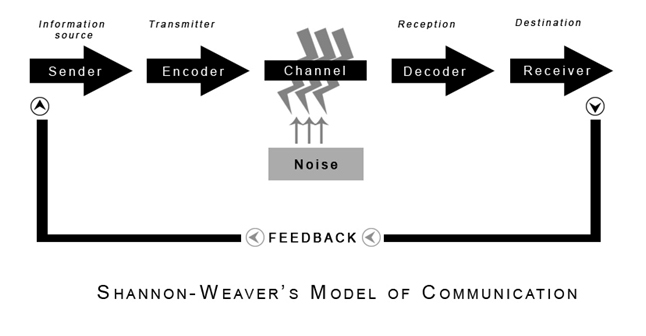
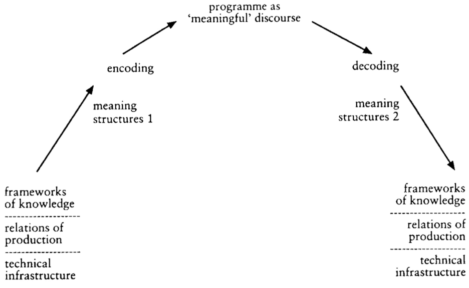

Hurricane Florence
The Duke Painted Bridge Springs a Leak!

Viewers Make Meaning, Part 2
Ideology and
Encoding / Decoding
September 18, 2018
Review: Barthes’ notion of myth
- myth
- connotations that function ideologically; that is, meanings that are specific certain groups are made to seem natural, univeral, and given for a whole society.
Ideology as the naturalization of the contingent.
Ideology:
- As the naturalization of the contingent. (Barthes)
- As propaganda.
- As false consciousness (Marx)
Louis Althusser (1970)
“Ideology and Ideological State Apparatuses”
Ideology (Althusser):
- is “the imaginary relationship of individuals to their real conditions of existence”
- “has a material existence” (e.g. ideology exists in/as an apparatus: an institution, a power structure, and its practices.)
- “hails or interpellates concrete individuals as concrete subjects.”
“I shall then suggest that ideology ‘acts’ or ‘functions’ in such a way that it ‘recruits’ subjects among the individuals (it recruits them all), or ‘transforms’ the individuals into subjects (it transforms them all) by that very precise operation which I have called interpellation or hailing, and which can be imagined along the lines of the most commonplace everyday police (or other) hailing: ‘Hey, you there!”
Interpellation:
- “Hey you there”
- Ideology interpellates the individual as a subject
- Ideology subjects, its function is to subject, to unfold the process of subjectivation.
Encoding / Decoding
Stuart Hall
Stuart Hall
For Stuart Hall, the process of communication involves the articulation of linked but distinctive moments:
- production
- circulation
- distribution/consumption
- reproduction

Shannon & Weaver, 1948
“A Mathematical Theory of Communication”
Bell System Technical Journal
Reproduction?
“Once accomplished, the discourse must then be translated– transformed, again – into social practices if the circuit is to be both completed and effective. If no “meaning” is taken, there can be no “consumption”. If the meaning is not articulated in practice, it has no effect.” (Althusser)

Hall’s Visualization of Encoding / Decoding of Broadcast Media
Different “Decoding Positions”
Dominant / Hegemonic: The “Preferred Reading” or interpretation.
Negotiated: A Negotiated Reading
Accepting some of preferred reading, rejecting or ignoring other partsOppositional / Counter-Hegemonic:
A “Globally Contrary” or Oppositional Reading
Hegemony
Stuart Hall adopts this term from Italian philosopher Antonio Gramsci
Hegemony
Dominant ideologies offered and experienced as “common sense”
Dominant ideologies are locked in struggle with other “counter-hegemonic” forces so their dominance is never guaranteed.
For Thursday, read:
Barthes, Roland. (1967⁄1977). “Death of the Author.” in Image-Music-Text. London: Fontana Press. pp. 142-148.
Foucault, Michel. (1969⁄1998). “What is an Author?” in Aesthetics, Method, and Epistemology (Essential Works of Foucault, 1954-1984, Vol. 2). New York: The New Press. pp. 205-222.